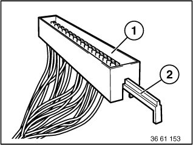
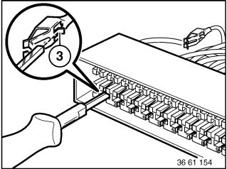

Fuse Block: Service and Repair
61 13 ... Fuse Holder

Remove appropriate fuse from fuse holder (1).
NOTE: Identify the position when removing fuses.
Pull sliding lock (2) out of fuse holder (1) completely.

With special tool 61 1 136 or 61 1 137 (pressing-off tool), press back retaining hooks (3) of appropriate contact and pull out cable.